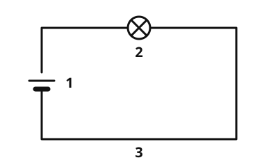

Der einfache Stromkreis
Die Idee
Du drückst den Schalter, und die Lampe leuchtet. Du nimmst ein Kabel ab, und sie geht aus. Warum? Die Lampe bekommt nur Strom, wenn der Strom im Kreis laufen kann: von der Batterie durch das Kabel zur Lampe und wieder zurück zur Batterie.
Das merkst du dir
- Stromkreis
Ein Stromkreis ist ein geschlossener Weg für den elektrischen Strom, von der Stromquelle durch die Geräte und wieder zurück.
Ein einfacher Stromkreis hat drei Teile:
- die Stromquelle, zum Beispiel eine Batterie. Sie hat zwei Pole, Plus und Minus.
- den Verbraucher, zum Beispiel eine Lampe. Er wandelt den Strom in Licht um.
- die Leitungen, also Kabel. Sie verbinden die Teile miteinander.

Der Stromkreis ist geschlossen. Der Strom kann von der Batterie durch die Lampe und zurück fließen, die Lampe leuchtet. Beschriftung: 1 Batterie, 2 Lampe, 3 Kabel.
Quelle: https://github.com/lernapps/elektrizitaet. Lizenz: CC0-1.0.Unterbrochen heißt dunkel
Ist der Kreis an einer Stelle offen, fließt nirgends Strom. Das kann ein loses Kabel sein, ein offener Schalter oder eine herausgeschraubte Lampe. Dann leuchtet die Lampe nicht.
Beispiel
Die Taschenlampe
In einer Taschenlampe sitzen Batterien, eine Lampe und ein Schalter. Drückst du den Schalter, schließt er den Kreis. Der Strom fließt durch die Lampe, und sie leuchtet. Schaltest du aus, öffnet der Schalter den Kreis wieder.
Übung
Übung
Lösung
Der Stromkreis ist unterbrochen, also kann kein Strom fließen. richtige Antwort
Ein Stromkreis muss ganz geschlossen sein. Eine einzige offene Stelle genügt, und der Strom fließt nirgends mehr.
Die Batterie ist dann sofort leer.
Eine Batterie entlädt sich nicht, wenn der Kreis offen ist. Es fließt ja kein Strom.
Die Lampe braucht zwei Batterien.
Eine Lampe leuchtet schon mit einer passenden Batterie, wenn der Kreis geschlossen ist.
Strom fließt nur im geschlossenen Kreis. Ein loses Kabel öffnet den Kreis an einer Stelle, und dann geht die Lampe aus.
Mehr dazu:
Übung
Lösung
eine Stromquelle, zum Beispiel eine Batterie richtige Antwort
Die Stromquelle liefert den Strom für den ganzen Kreis.
ein Verbraucher, zum Beispiel eine Lampe richtige Antwort
Der Verbraucher macht etwas mit dem Strom, hier Licht.
Leitungen, die alles verbinden richtige Antwort
Ohne Leitungen gibt es keinen Weg, auf dem der Strom von Teil zu Teil fließt.
ein Wasserschlauch
Ein Wasserschlauch leitet Wasser. Im Stromkreis braucht man Leitungen aus Metall, zum Beispiel Kupferkabel.
Stromquelle, Verbraucher und Leitungen bilden zusammen einen einfachen Stromkreis.
Mehr dazu:
Übung
Lösung
Richtige Antwort: Die Aussage stimmt nicht.
Ist der Kreis offen, fließt gar kein Strom. Die Lampe leuchtet dann überhaupt nicht.
Mehr dazu: